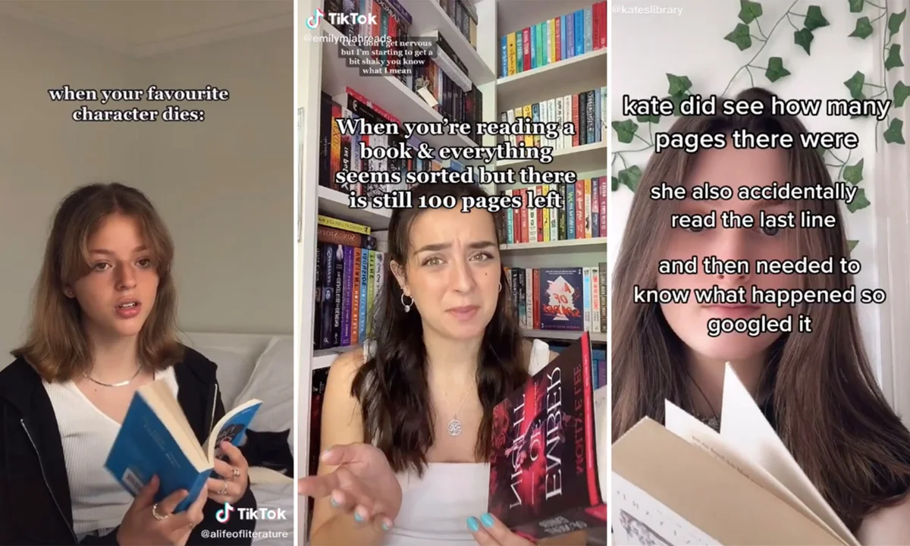

What is BookTok?
The word "BookTok" refers to the literary community on TikTok, where users share their love of literature, make jokes about reading, and promote books through videos. Because producers can upload videos on TikTok that range in length from 15 seconds to 10 minutes, brief and in-depth critiques have the chance to spread throughout the platform. This online community has grown to be a major force in the book industry, selling books while turning non-readers into voracious readers and providing literary enthusiasts with their next high. Books that have gained popularity on BookTok are featured in special "As Seen on BookTok" sections of bookstores. BookTok is unique in part because what goes viral on the algorithm is determined by readers' preferences and zeal rather than by marketing funds from publishers or writers. Users may feel more intimate as a result, as if they are receiving recommendations from friends.
At present, BookTok is a more generalized type of content on TikTok that is all about books. The majority of the posts under the hashtag are from young ladies who are raving over their most recent books, which are usually fantasy or YA romance novels. Montage videos of lovely Pinterest photos arranged to music are also available, intending to capture the "aesthetic" of a well-known book. TikTok users reading and annotating their books with dozens of multicolored sticky tabs, book hauls, recommendation videos, and much more are all available.

"Who are the 'BookTok Girls"
If you've ever spent time browsing TikTok and seen videos of trendy romance/YA books with subtitles like "this book destroyed me," pastel-lit bookshelves, or tearful reactions to narrative twists, you've come across what many refer to as a "BookTok girl."The phrase broadly refers to creators who visit the BookTok subcommunity of TikTok, most of whom are young women. They exchange book hauls, suggestions, comments, annotated margins, comfortable reading corners, and beautiful arrangements.
What distinguishes them?
They usually concentrate on romance, fantasy, and young adult fiction, which are frequently "read-for-feels" or emotionally charged novels. (The Lost Book Project). The emotional response, the aesthetics (tabs, color-coded shelving, candlelit photographs), and the feeling of connection among readers are all highlighted in their videos. (GoodNovel). They have quantifiable impact: books that are highlighted in BookTok videos frequently experience a spike in popularity, which prompts publishers and writers to take notice (SocialEZ). The term "girl" is frequently used, although it's more about style and identity than rigid gender; rather than academic or isolated reading, it conveys a sense of emotional, communal reading culture.

“OOMF” — One of My Followers (or Friends)
"OOMF" stands for "One of My Followers" or "One of My Friends." They are significant because, in the world of BookTok, fandom culture and reading groups coexist with social media language and identity. When someone writes, "OOMF recommended this new romance novel and I devoured it," they are indicating that they are a part of a digital reading circle where friends and followers exchange their preferences, reactions, and enthusiasm without usually revealing names.
The primary function of BookTokers—social media influencers who select, suggest, and advertise books to large audiences—is what sets BookTok apart from previous types of online literary communities. By reintroducing ancient literature to younger audiences and elevating lesser-known books to bestseller status, these influencers have proven their ability to not only affect literary preferences but also drastically change consumer behavior. For instance, The Posthumous Memoirs of Brás Cubas by Machado de Assis saw a sharp increase in sales in 2024 after influencer Courtney Henning Novak's video went viral. Shortly after, it topped Amazon's bestseller list. In a similar vein, Colleen Hoover's popularity on BookTok helped her achieve international bestseller status, with multiple of her books concurrently charting,